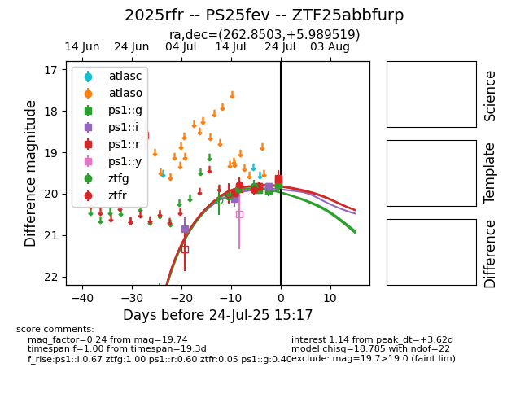

Target 2025rfr at 2025-07-24 15:17, see:
FINK: fink-portal.org/2025rfr
Lasair: lasair-ztf.lsst.ac.uk/objects/2025rfr
ALeRCE: alerce.online/object/2025rfr
TNS: wis-tns.org/object/2025rfr
YSE: ziggy.ucolick.org/yse/transient_detail/2025rfr
alt names
2025rfr (yse,tns)
ZTF25abbfurp (ztf,fink)
PS25fev (panstarrs)
coordinates:
equatorial (ra, dec) = (262.8503,+5.98952)
galactic (l, b) = (29.1175,+20.51461)
photometry
last ps1::g=19.74, ps1::i=19.83, ps1::r=19.64, ztfg=19.83, ztfr=19.91
6 ps1::g, 4 ps1::i, 6 ps1::r, 3 ztfg, 2 ztfr detections
